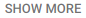

The Odin Project
Published on Feb 27, 2014
How do you contribute to open source? In this video, I'll describe the easiest way to make a simple contribution to an open source project -- without using the command line, a text editor, "forking a repo", or even touching Git outside of Github. I'll also describe what kinds of contributions open

Wing N. 1 year ago (edited)
"use your power for good" haha thank you for the video.
6
REPLY
Sibe Cute 2 years ago
thanks a lot for video
2
REPLY

andrewscheuermann05 4 years ago
FYI: the edit button has changed to a diagonal pencil
1
REPLY

ButtonMasher 2 years ago
Wow this video was super helpful, clear, and concise. Thank you very much.
1
REPLY
12 Comments